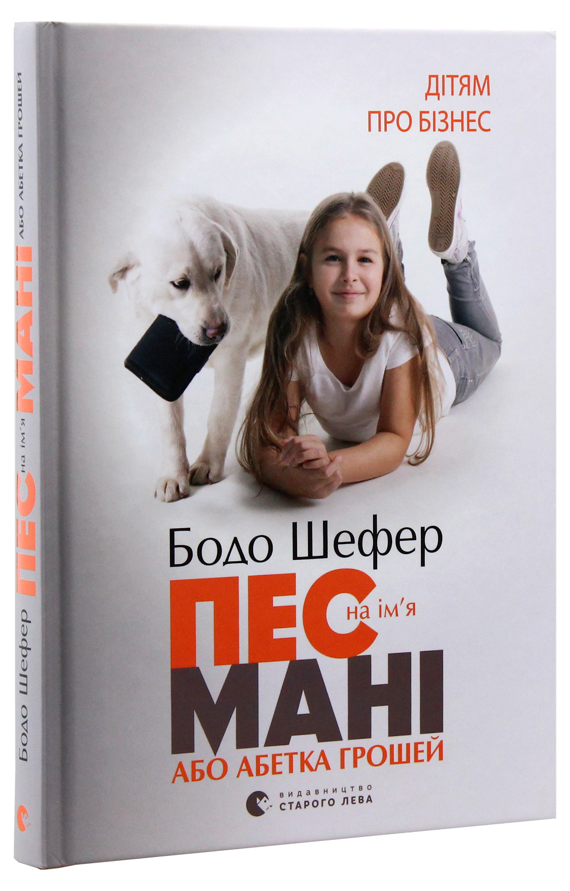

В книзі йде мова про дівчинку Кіру, сім’я якої потрапила у фінансову скруту і не може дати раду своїм кредитам та видаткам. Та й з кишеньковими грішми Кіра не знає як чинити: витрачаючи одразу всі на забаганку, згодом починає жалітися. Одного ранку біля будинку дівчинки знаходиться поранений білий лабрадор. Сім’я прихистила та виходила пса. А ще, виявляється, він відгукується на ім’я Мані (англ. Money — гроші). За кілька днів Кіра самотужки, ризикуючи життям, врятувала собаку з водяної пастки. Намагаючись віддячити, пес розказує, що колись жив у фінансового консультанта, а отже — може розказати Кірі як чинити з грошима, аби втілити її мрію — поїхати на навчання до Каліфорнії та купити ноутбук.
 Повернутись на головну сторінку